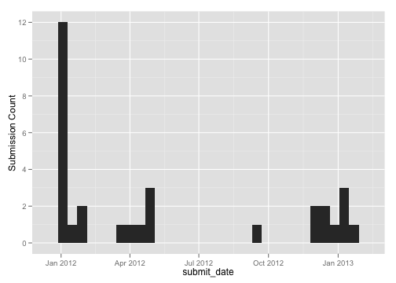

formhub.R makes is easy to download and work with datasets on formhub.R. After downloading, formhub.R post-processes your dataset to convert the different columns to the correct type, which it derives from the type you specified during the creation of your XLSform.
Let us illustrate this with a simple example:
source("../formhub.R")
# Download the dataset named good_eats in the account of mberg NOTE: We
# need to @data to retrieve the dataframe from the return object
good_eats <- formhubDownload("good_eats", "mberg")@data
The downloaded data has its fields converted to the right types, something we'll look at in depth later. Before we do that, lets present a quick example of the power of these conversions by looking at dates. Can we look at how much data mberg has been submitting over time?
library(ggplot2)
qplot(data = good_eats, x = submit_date) + ylab("Submission Count")

How about riskiness of the food he is trying and reporting about… has that changed over time?
qplot(data = good_eats, x = submit_date, fill = risk_factor)
Looks like it has! mberg's getting riskier as time goes on.